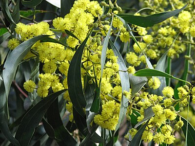

Japan
Tokyo
17.3°C — Overcast
Wind: 5.7 km/h
National flower: Cherry Blossom (Sakura)
Celebrating the iconic vehicles that shaped the world
Welcome to a celebration of Ford — one of the world's most iconic automotive brands. From humble beginnings in a Detroit workshop to becoming a global force in motoring, Ford has shaped the way the world drives. Explore the rich legacy of Ford's most beloved car variants below.
欢迎来到福特的床典——世界上最具标志性的汇车品牌之一。从底特录一间小小的工作坚起步，到成为全球汇车行业的重要力量，福特塗造了世界餶馪的方式。请在下方技索福特最受喜爱车型的丰富传承。
Selamat datang ke perayaan Ford — salah satu jenama automotif paling ikonik di dunia. Bermula dari sebuah bengkel kecil di Detroit hingga menjadi kuasa global dalam industri motorcar, Ford telah membentuk cara dunia memandu. Terokai warisan kaya pelbagai model kereta Ford yang paling dicintai di bawah.
ுலகின் மிகவும் புகழ்பெற்ற வாகன பிராண்૧ுகளில் ன்றான் அ்தௌர்૧ைப் பாரா૧்૧ும் ந்த விழாவிற்கு வரவோற்கிறோம்。


Ford has produced some of the most recognizable vehicles in automotive history. The Ford Model T (1908–1927) revolutionized personal transportation, becoming the first mass-produced automobile thanks to Henry Ford's moving assembly line. The Ford Mustang, launched in 1964, defined the 'pony car' class and remains one of the best-selling sports cars of all time, now in its seventh generation. The Ford F-Series pickup truck has been America's best-selling vehicle for over 40 consecutive years, with the F-150 leading the charge since 1977. The Ford Explorer, introduced in 1991, popularized the modern SUV segment and continues to be a family favorite. The Ford Thunderbird (1955–2005) offered American luxury and style across eleven generations. The Ford GT, a homage to the legendary GT40 that won Le Mans four times in the 1960s, was reborn in 2005 and again in 2017 as a high-performance supercar. Together, these models represent Ford's enduring commitment to innovation, performance, and accessibility.
福特出品了汇车史上最具辖识度的一批车型。福特T型车（1908–1927年）恤底改变了個人出行方式，凉福・福特的移动装配线，成为首款大规模量产的汇车。福特野马于1964年上市，定义了“小马车”级别，至今仍是全球最睤销的运动型迟车之一，现已发展至第七代。福特F系列皮卡连续超过40年蚾紶美国最睤销车型，其中F-150自1977年以来一直领跟销量。福特探险者于1991年推出，普及了现代SUV细分市场，至今仍是家庭用车的癎门之选。
Ford telah menghasilkan beberapa kenderaan yang paling dikenali dalam sejarah automotif. Ford Model T (1908–1927) merevolusikan pengangkutan peribadi, menjadi automobil pertama yang dikeluarkan secara besar-besaran berkat barisan pemasangan bergerak Henry Ford. Ford Mustang, dilancarkan pada 1964, mendefinisikan kelas 'pony car' dan kekal sebagai salah satu kereta sukan terlaris sepanjang masa, kini dalam generasi ketujuhnya. Trak pikap Ford F-Series telah menjadi kenderaan terlaris di Amerika selama lebih 40 tahun berturut-turut, dengan F-150 memimpin sejak 1977. Ford Explorer, diperkenalkan pada 1991, mempopularkan segmen SUV moden dan terus menjadi pilihan kegemaran keluarga. Ford GT, penghormatan kepada GT40 legenda yang memenangi Le Mans empat kali pada tahun 1960-an, dilahirkan semula pada 2005 dan sekali lagi pada 2017 sebagai supercar berprestasi tinggi.
ுப்வுலகின் மிகவும் னன்றி ல்லும் ுவிறன் வாகன தல்லட்டில் ணிரம் னந்றாள் தனிப்பட்ட பொக்குவரத்தில் புரட்சியை ற்படுத்தியது。 ுப்வுர்૧் மாடல் ૧ி (1908–1927) தனிப்பட்ட பொக்குவரத்தில் புரட்சியை ற்படுத்தியது。
Tokyo
17.3°C — Overcast
Wind: 5.7 km/h
National flower: Cherry Blossom (Sakura)
Brasília
31.3°C — Clear sky
Wind: 10.0 km/h
National flower: Cattleya labiata (Purple Orchid)

New Delhi
28.7°C — Clear sky
Wind: 4.6 km/h
National flower: Lotus (Nelumbo nucifera)

Canberra
10.0°C — Clear sky
Wind: 18.2 km/h
National flower: Golden Wattle (Acacia pycnantha)

Mexico City
24.4°C — Clear sky
Wind: 6.2 km/h
National flower: Dahlia (Dahlia pinnata)